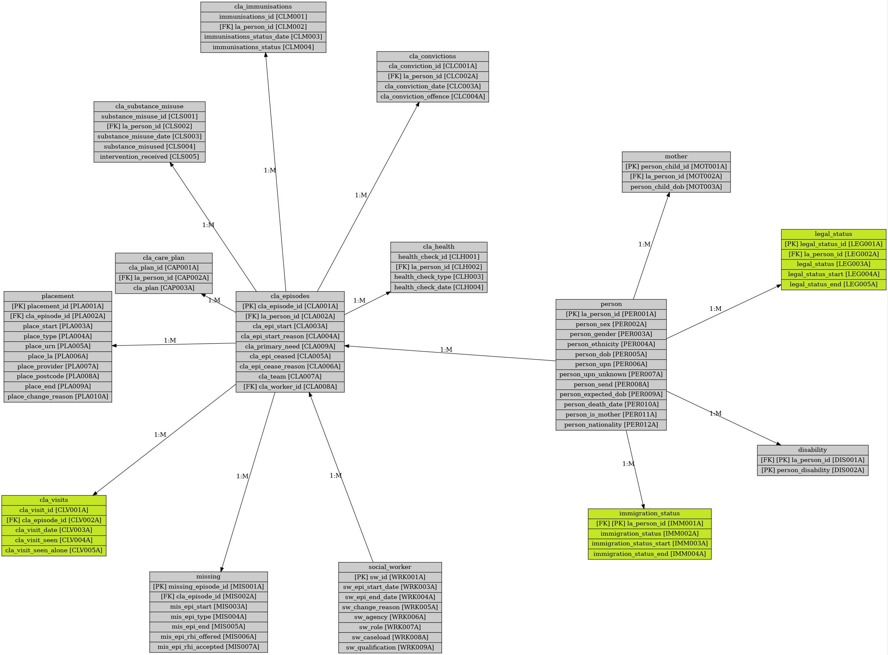

Last updated:31-07-2023 17:40
SSD data map subsets:
This page shows subset views of the SSD data map towards core DfE returns, and below this the initial data mapping undertaken by the Standard Safeguarding Dataset project to understand the existing children's safeguarding data landscape.
ANNEXA
CLA

RIIA

Current DfE Data Returns Map:
Initial data mapping undertaken by the Standard Safeguarding Dataset. Please note that image quality will vary due to limitations on source files and page generator workflow.
Key/Legend:
Identity
S47 and IPCP
Contact
Early Help
Early Help (Pilot)
Social Care Referral
Child in Need
CP Plan
Looked After & Leavers
Permanence
Education
Workforce | Other
SSD initial plan_map - ADCS Safeguarding Pressures

SSD initial plan_map - Annex A Lists

SSD initial plan_map - EH Benchmarking

SSD initial plan_map - School Census (Pupils) XML
 XML.jpg)
SSD initial plan_map - Participation in education, training and NEET age 16 to 17

SSD initial plan_map - CSC National Framework Dashboard

SSD initial plan_map - S251

SSD initial plan_map - SSDA903 csv files

SSD initial plan_map - RIIA

SSD initial plan_map - CIN Census XML

SSD initial plan_map - SEN2 XML

SSD initial plan_map - CSC Workforce

SSD initial plan_map - Include in SSD